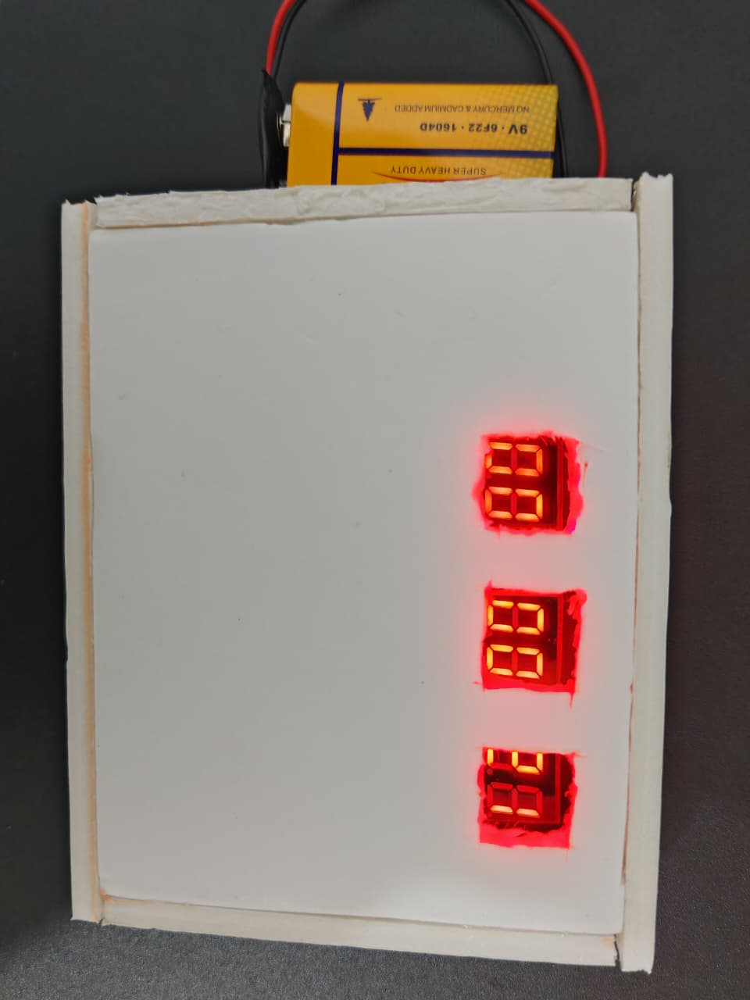
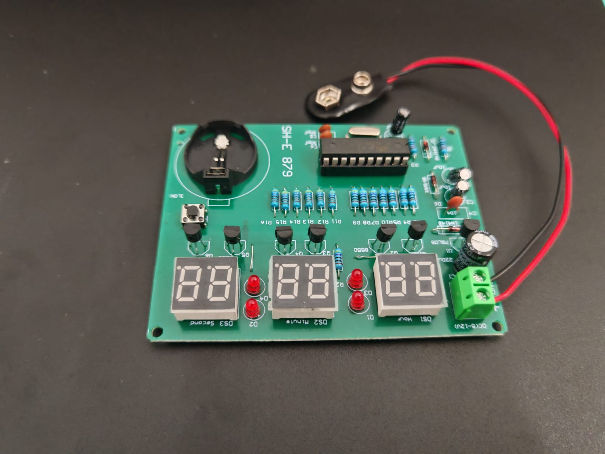
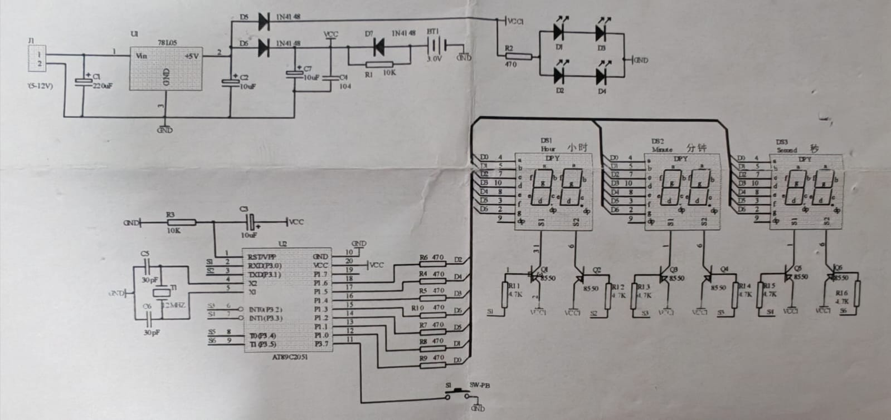

Alimentar
La fuente entra por J1. El 78L05, los diodos y los capacitores regulan, distribuyen y filtran la alimentación.
ELECTRÓNICA DIGITAL / PROYECTO ACADÉMICO
Seis dígitos. Un microcontrolador.
Un proyecto para comprender cómo la electrónica convierte pulsos en tiempo.

01 / EL PROYECTO
Un reloj de uso cotidiano convertido en una experiencia de aprendizaje.
Este proyecto consiste en el ensamblaje y estudio de un reloj digital de seis dígitos basado en el AT89C2051. Tres displays dobles muestran horas, minutos y segundos. Su funcionamiento relaciona temporización, memoria, control de entradas y salidas y multiplexación.
La placa del kit incorpora pistas y posiciones prediseñadas. El ensamblaje se realizó con apoyo de otra persona; el trabajo académico se centra en identificar los componentes, interpretar el esquema y comprender el dispositivo. El reloj funciona y su caja está terminada.
Estudiar y comprobar el funcionamiento del reloj SH-E-879, relacionando sus componentes y conexiones con los principios de temporización, multiplexación y control de señales.
02 / FUNCIONAMIENTO
La fuente entra por J1. El 78L05, los diodos y los capacitores regulan, distribuyen y filtran la alimentación.
El cristal de 12 MHz establece la referencia. El programa y los temporizadores construyen los intervalos de conteo.
El microcontrolador mantiene las variables de segundos, minutos y horas y actualiza sus valores.
Las líneas comparten los patrones de segmentos. Seis transistores seleccionan los dígitos sucesivamente.
EXPLORACIÓN INTERACTIVA
Selecciona un número para ver qué segmentos lo forman. Esta demostración es didáctica; no está conectada al reloj físico.
Segmentos: a, b, d, e, g
03 / HARDWARE

Microcontrolador de 8 bits; zócalo DIP de 20 pines.
Seis dígitos de siete segmentos: horas, minutos y segundos.
Q1–Q6 seleccionan los dígitos.
Regulador con salida nominal de 5 V.
Referencia del oscilador del microcontrolador.
8 de 470 Ω, 6 de 4,7 kΩ y 2 de 10 kΩ.
3 de 10 µF, 1 de 220 µF, 2 de 30 pF y 1 de 100 nF (104).
3 diodos de señal y 4 LED rojos de 3 mm.
Entrada de usuario; cuatro terminales físicos.
Previsto para una batería de 3 V; vacío en la foto de la placa.
Bornera de dos terminales y tres puentes de alambre.
Cautín, estaño, fundente, fuente compatible y multímetro.
04 / FUNDAMENTOS
Los 20 temas del informe, organizados para consultar y estudiar.
20 temas
Un microcontrolador integra en un mismo circuito un procesador, memoria y periféricos que permiten controlar un dispositivo electrónico. A diferencia de una computadora de propósito general, un sistema embebido se diseña para ejecutar tareas específicas, como medir una variable, controlar una salida o mostrar información. En el reloj SH-E-879, el AT89C2051 coordina el conteo del tiempo, la selección de los dígitos y la lectura del pulsador. Su funcionamiento depende de un programa almacenado en la memoria de código. El estudio de este componente permite comprender cómo las instrucciones del programa se relacionan con las señales eléctricas presentes en el circuito.
El AT89C2051 pertenece a la familia 8051 y dispone de un procesador de ocho bits, 2 KB de memoria Flash para el programa y 128 bytes de memoria RAM. También incorpora dos temporizadores o contadores de 16 bits y quince líneas de entrada y salida. Estas características permiten desarrollar aplicaciones pequeñas de control y temporización. En este proyecto, el microcontrolador se instala en un zócalo de veinte pines, lo que facilita su colocación y retiro sin soldarlo directamente. Para interpretar sus conexiones es necesario distinguir los terminales de alimentación, reinicio, oscilador y puertos, ya que cada grupo cumple una función diferente.
El comportamiento del reloj depende del programa que ejecuta el microcontrolador. Dicho programa debe mantener las variables del tiempo, actualizar los números del display y reconocer las acciones realizadas sobre el pulsador. El esquema eléctrico permite identificar las conexiones, pero no revela por completo las instrucciones almacenadas dentro del AT89C2051. Por esa razón, no debe afirmarse que el programa fue escrito en lenguaje C ni que utiliza una rutina específica sin disponer de su código. El trabajo con un kit permite estudiar el funcionamiento del hardware y comprobar el comportamiento del programa incorporado, aunque no se haya desarrollado personalmente ese software.
El cristal de cuarzo proporciona una referencia de frecuencia para el circuito oscilador del microcontrolador. En el SH-E-879 se utiliza un cristal de 12 MHz conectado a los terminales del oscilador del AT89C2051. Esta frecuencia determina el ritmo de funcionamiento de los circuitos internos y sirve como base para la temporización. El cristal no entrega directamente un pulso por segundo; el programa y los temporizadores convierten la referencia rápida en intervalos adecuados para contar el tiempo. La exactitud del reloj depende de factores como la tolerancia del cristal, las condiciones de operación y la forma en que el programa realiza el conteo.
Los dos capacitores cerámicos de 30 pF forman parte de la red del oscilador. En el esquema del fabricante, cada uno conecta un terminal del cristal con tierra. Estos capacitores contribuyen a establecer las condiciones de carga que necesita el circuito para oscilar de manera adecuada. Su valor no debe interpretarse simplemente como un filtro que elimina todo el ruido ni como una garantía de precisión absoluta. El funcionamiento depende de la combinación entre cristal, capacitores, conexiones y características del microcontrolador. Durante el montaje resulta conveniente mantener las conexiones de esta etapa cortas y evitar puentes de soldadura que puedan alterar su comportamiento.
Los temporizadores internos permiten contar eventos relacionados con el funcionamiento del microcontrolador y generar intervalos de tiempo. En la arquitectura clásica del AT89C2051, un ciclo máquina corresponde a doce periodos del oscilador. Con un cristal de 12 MHz, esto equivale a un ciclo máquina de un microsegundo. El programa puede utilizar los temporizadores para construir intervalos mayores y actualizar el reloj. Sin embargo, conocer la frecuencia del cristal no permite deducir por sí solo la configuración exacta del programa. Para determinar los valores de recarga, las interrupciones y las compensaciones utilizadas sería necesario revisar el código o realizar mediciones sobre el dispositivo.
Un reloj digital representa el tiempo mediante variables que cambian siguiendo una secuencia definida. Los segundos avanzan hasta completar sesenta unidades, momento en que se incrementan los minutos. De forma semejante, sesenta minutos producen el incremento de una hora. El programa debe controlar estos cambios y mantener cada variable dentro de su intervalo permitido. El SH-E-879 dispone de seis dígitos, distribuidos en tres módulos identificados en el manual para horas, minutos y segundos. Esta distribución permite observar directamente el avance de los segundos. El formato de las horas y el comportamiento al completar un día deben comprobarse en el reloj funcionando.
El microcontrolador utiliza espacios diferentes para almacenar las instrucciones y los datos de trabajo. La memoria Flash conserva el programa cuando se desconecta la alimentación, mientras que la RAM almacena variables temporales durante la operación. Las cantidades correspondientes a horas, minutos y segundos pueden mantenerse en esta memoria de datos. La RAM es volátil, por lo que necesita alimentación para conservar su contenido. Esta diferencia explica por qué un reloj puede mantener su programa después de desconectarse y, al mismo tiempo, perder la hora si no existe un respaldo adecuado. La conservación del tiempo debe comprobarse considerando tanto el circuito de alimentación como el programa.
Un display de siete segmentos está formado por siete elementos luminosos identificados normalmente con las letras a, b, c, d, e, f y g. Al encender distintas combinaciones de estos segmentos se representan los números del cero al nueve. Algunos módulos también incorporan puntos decimales, aunque su presencia no significa que todos se utilicen en una aplicación. El SH-E-879 emplea tres displays de dos dígitos, que proporcionan seis posiciones numéricas. Cada módulo muestra una parte del tiempo. El análisis del display permite relacionar una combinación de señales digitales con un símbolo visible y comprender cómo se presenta información numérica al usuario.
El esquema del kit utiliza transistores PNP para alimentar los terminales comunes de los dígitos, lo que corresponde a una configuración de ánodo común. En esta disposición, el terminal común del dígito seleccionado recibe alimentación positiva y los segmentos se iluminan cuando existe una trayectoria de corriente hacia un potencial menor. El microcontrolador establece los estados necesarios en las líneas de segmentos para formar cada número. La identificación del tipo de display es importante porque un módulo de cátodo común requiere otra forma de control. Por ello, no debe cambiarse el display por uno diferente sin comprobar previamente su configuración y distribución de terminales.
La multiplexación permite compartir las líneas de segmentos entre varios dígitos y seleccionar cada posición por separado. El microcontrolador coloca el patrón correspondiente a un número, activa el dígito asociado y después continúa con la siguiente posición. Esta secuencia se repite rápidamente durante el funcionamiento. Cuando la frecuencia de refresco es adecuada, el usuario percibe una imagen continua de los seis dígitos. La principal ventaja es reducir las conexiones necesarias para controlar la pantalla. El brillo y el consumo dependen de la corriente aplicada y del tiempo de encendido de cada posición, por lo que la multiplexación no garantiza automáticamente un menor consumo energético.
Los seis transistores S8550, identificados como Q1 a Q6, permiten seleccionar los seis dígitos del reloj. Cada transistor funciona como un interruptor electrónico controlado por una señal del microcontrolador a través de una resistencia de base. Cuando se establece la polarización adecuada, el transistor permite el paso de corriente hacia el terminal común del dígito correspondiente. Al desactivarse, interrumpe esa alimentación. El uso de esta etapa permite separar la señal de selección de la corriente suministrada al dígito. Los transistores deben colocarse respetando las posiciones del fabricante, ya que invertir sus terminales puede provocar fallas de encendido o un funcionamiento incorrecto.
Las resistencias cumplen funciones diferentes según su posición dentro del esquema. Siete resistencias de 470 ohmios se encuentran en las líneas de los segmentos y limitan su corriente; otra resistencia del mismo valor se utiliza en el conjunto de indicadores LED. Las seis resistencias de 4.7 kiloohmios participan en el control de las bases de los transistores. Las dos resistencias de 10 kiloohmios pertenecen a otras etapas del circuito, como reinicio y respaldo. La corriente de un segmento depende de la tensión disponible y de las caídas de voltaje de los componentes. Por ello, no debe asignarse una corriente exacta sin calcularla o medirla.
El manual identifica una entrada de alimentación de 6 a 12 V de corriente continua y un regulador 78L05. Este componente tiene una salida nominal de 5 V y se distingue de los transistores, aunque utiliza un encapsulado físicamente parecido. Su función es proporcionar una alimentación regulada cuando la tensión de entrada y la carga permiten operar correctamente. El esquema también incorpora diodos que producen caídas de tensión en algunas líneas. Por ello, la tensión presente en el microcontrolador debe distinguirse de la aplicada a la bornera de entrada. Una entrada de 9 V no significa que el AT89C2051 reciba directamente ese voltaje.
Los capacitores de alimentación ayudan a reducir variaciones de tensión producidas por la fuente y por la conmutación del circuito. El kit incorpora un capacitor electrolítico de 220 µF y otros capacitores de 10 µF distribuidos en distintas etapas. También incluye un capacitor de 100 nF, marcado con el código 104, que cumple una función de desacoplamiento. Los capacitores electrolíticos almacenan carga y deben instalarse respetando su polaridad. Su tensión nominal indica un límite de utilización, no el voltaje que necesita todo el reloj. El filtrado contribuye a una operación estable, pero no sustituye una fuente adecuada ni corrige conexiones incorrectas.
El reinicio permite que el microcontrolador comience la ejecución del programa desde una condición definida. En el esquema del SH-E-879, el terminal RST se conecta a una red formada por una resistencia de 10 kiloohmios y un capacitor de 10 µF. Esta red genera una condición de reinicio durante el establecimiento de la alimentación. Después, el programa inicia sus tareas de conteo y visualización. Reiniciar el microcontrolador no equivale necesariamente a establecer la hora en cero, ya que ese comportamiento depende del programa y del estado de alimentación previo. La polaridad del capacitor y la continuidad de las conexiones de esta etapa deben verificarse.
El pulsador S1 permite ajustar el tiempo mediante las acciones descritas en el manual. La instrucción fotografiada indica que una pulsación prolongada de más de dos segundos permite entrar o salir del estado de ajuste, mientras que las pulsaciones breves modifican el valor seleccionado. La secuencia específica de selección y cambio debe observarse durante la prueba del reloj. Como cualquier contacto mecánico, el pulsador puede producir rebotes al presionarse o soltarse. El programa debe interpretar estas señales sin generar cambios involuntarios. Mantener un nivel lógico definido y filtrar el rebote son funciones relacionadas, pero una resistencia de polarización no elimina por sí sola el rebote.
El circuito incorpora tres diodos 1N4148 y una conexión para una batería de 3 V. Según el esquema, estos elementos forman parte de las trayectorias de alimentación y respaldo. Los diodos permiten el paso de corriente principalmente en una dirección y ayudan a separar las ramas de alimentación. La batería está destinada a mantener una alimentación de respaldo para la parte de control cuando se retira la fuente principal. Esto no implica que los displays permanezcan encendidos durante ese periodo. La conservación efectiva de la hora debe comprobarse mediante una prueba de desconexión y reconexión. En la fotografía del reloj armado, el portabaterías se encuentra vacío.
La placa de circuito impreso mide 90 por 70 mm y dispone de pistas y etiquetas que orientan la colocación de los componentes. El montaje de inserción permite reconocer resistencias, capacitores, diodos y semiconductores antes de soldarlos. Los cuatro LED rojos están colocados entre los módulos de visualización y forman las separaciones del panel horario. El manual también señala la presencia de tres puentes de alambre que deben instalarse. La calidad de las uniones influye en la continuidad eléctrica del circuito. Es necesario revisar puentes accidentales, terminales sueltos y uniones deficientes, ya que una placa prediseñada no garantiza por sí sola un ensamblaje correcto.
La comprobación del reloj debe incluir el encendido de los seis dígitos, el avance del tiempo y la respuesta del pulsador. También resulta útil revisar la alimentación, observar posibles parpadeos y comparar la hora mostrada con una referencia durante un periodo conocido. Si se instala la batería, puede evaluarse el comportamiento después de desconectar la fuente principal. Los resultados deben registrarse tal como se observan, sin atribuir al dispositivo una precisión o estabilidad que no se haya medido. El valor educativo del proyecto consiste en relacionar el esquema con el circuito físico, identificar funciones y desarrollar criterios para reconocer y explicar posibles fallas.
05 / ESQUEMA ELÉCTRICO
Esquema del fabricante correspondiente al kit SH-E-879: alimentación, respaldo, reinicio, oscilador y control de los seis dígitos.

06 / CONSTRUCCIÓN Y RESULTADO
La caja deja visibles los tres módulos de dos dígitos.
El proyecto pasó de los componentes sobre una PCB al circuito ensamblado y, finalmente, a una caja con aberturas para la pantalla. La fotografía documenta el reloj encendido con una batería de 9 V conectada a su entrada.
Reconocimiento de valores, polaridades, terminales y posiciones en la placa.
Montaje de los componentes de inserción con apoyo en la soldadura.
El autor confirma que el reloj funciona. La fotografía muestra los displays iluminados.
Presentación del circuito dentro de una caja con ventanas para los seis dígitos.
Se cuenta con confirmación de funcionamiento y evidencia fotográfica del encendido. No se aportaron registros de precisión, consumo, duración de la batería o autonomía del respaldo; por ello no se asignan valores a esas características.
Para ampliar la evaluación: registrar el cambio de segundos a minutos y de minutos a horas, documentar la secuencia del pulsador, comparar la hora con una referencia durante un periodo definido y comprobar el respaldo al desconectar y reconectar la fuente principal.
07 / APRENDIZAJES
El microcontrolador coordina el conteo y la visualización. El esquema describe las conexiones; el comportamiento exacto depende del programa incorporado.
La multiplexación permite controlar seis dígitos compartiendo las líneas de segmentos y seleccionando cada posición.
La identificación de componentes y el montaje permiten relacionar la teoría con un dispositivo real de aplicación residencial y educativa.
Respetar la polaridad y la entrada indicada para la placa. Distinguir la tensión de la fuente de la tensión interna regulada. Evitar presionar componentes dentro de la caja, mantener acceso al pulsador y revisar conexiones antes de alimentar. Registrar mediciones de precisión y consumo como ampliación del proyecto.
08 / DOCUMENTACIÓN
Consulta el informe original para revisar su desarrollo académico y la bibliografía incluida por el autor. El estado final del montaje se actualiza en esta página.
Descargar informe completo ↓Contenido académico: informe del proyecto facilitado por Bryan Israel López Estrada. Esquema: documentación del fabricante del kit SH-E-879. Fotografías: material aportado por el autor.
La bibliografía del documento se conserva en el PDF original; sus referencias no se presentan aquí como verificadas de manera independiente.